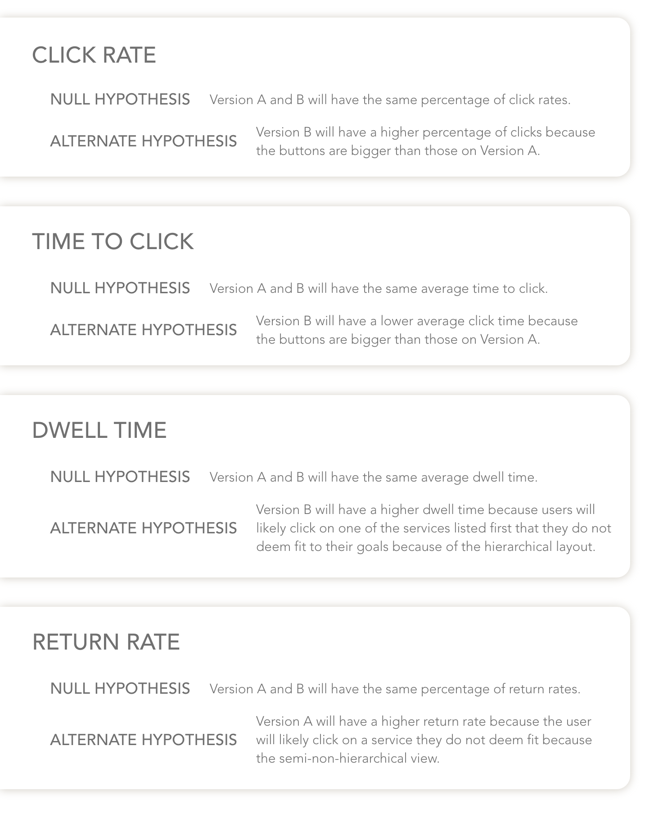
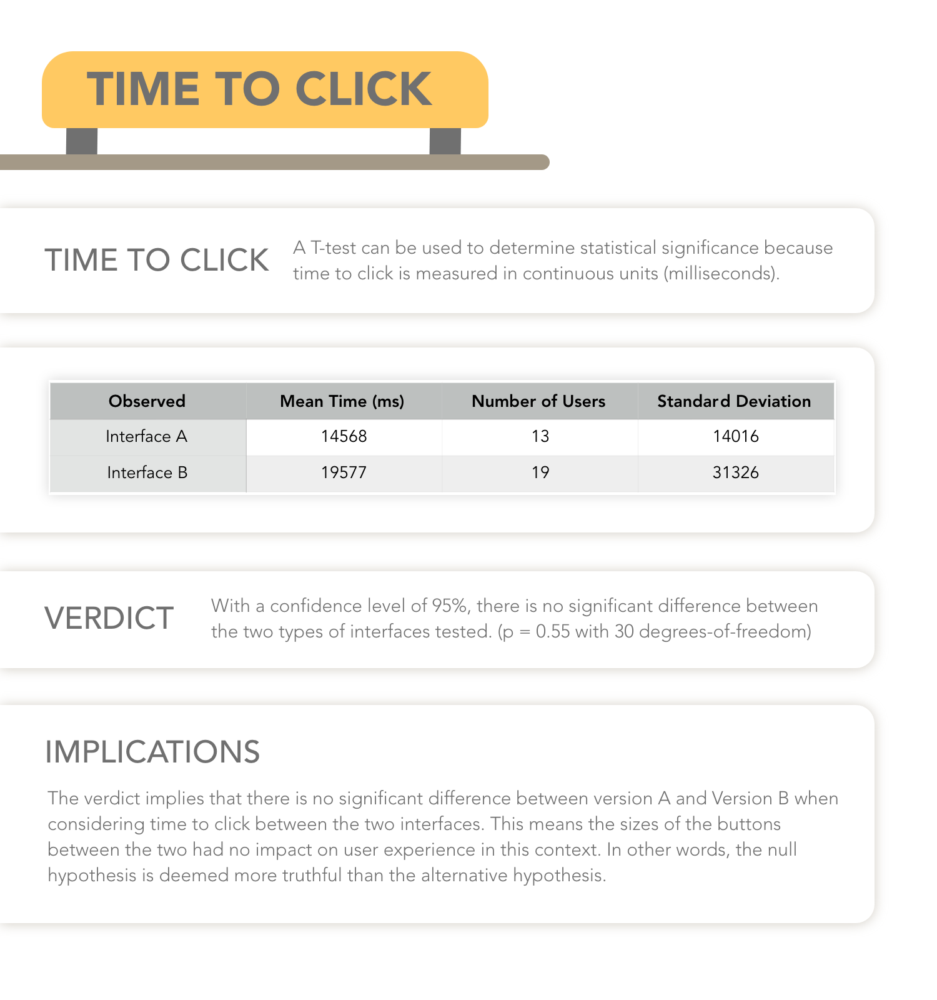
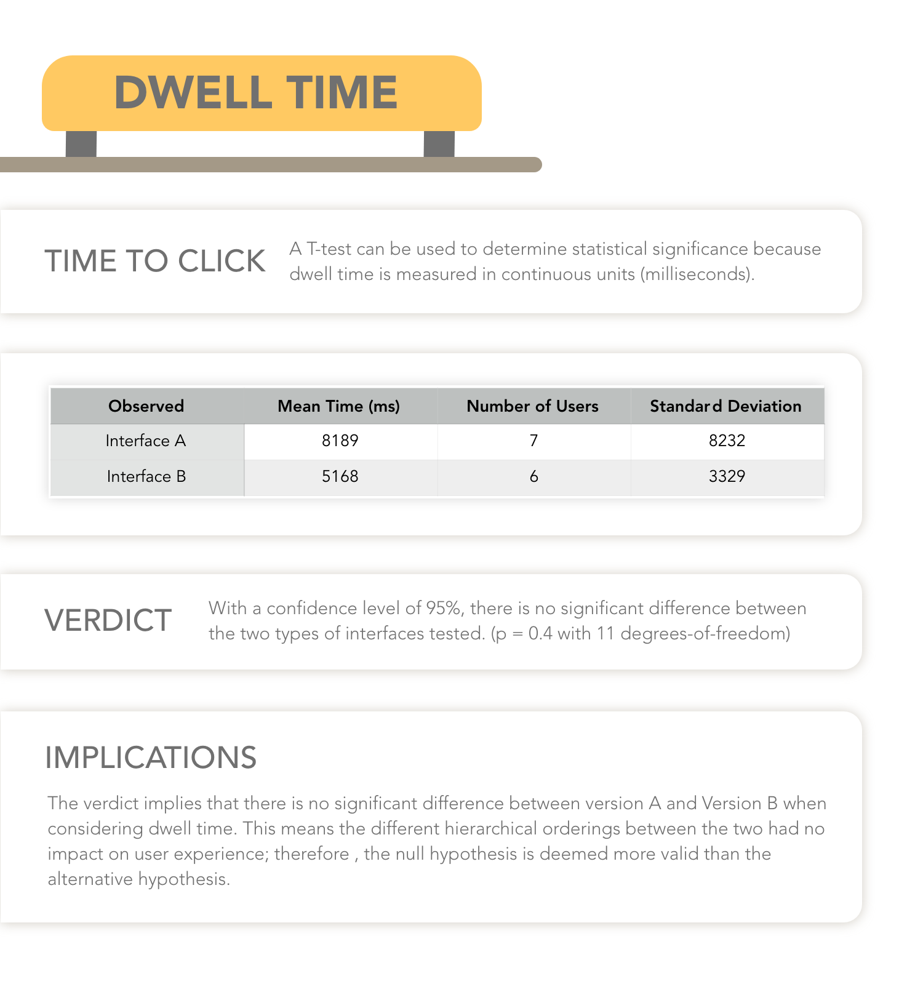

A/B TESTING
Testing for universal interface effectiveness is no easy feat, the right amount of data and tools makes it somewhat feasible. For this project, a fabricated taxi company located in Memphis was the foundation for the branding; two differing web interfaces were designed alongside a single mobile interface. A form of A/B testing was utilized to discern what interface elements were effective at portraying the information and which web interface layout had higher rates of usability success.
Quantitative data for two versions of a website interface was collected in-class and analyzed after. The goal of this project is to experimentally determine what elements of an interface are effective and how to take that information to offer potential solutions for the flaws. This project was completed as an assignment for the class User Interface / User Experience (CSCI1300) at Brown University to showcase familiarity with this specific form of user experience testing, ability to analyze data collected from said tests, and analytical evaluation on what may help the interface perform better.
Background
Memphis Taxis, though a mock site for gaining experience with A/B user testing, is trying to design an interface that will fare well in the modern taxi market. A basic layout has been given for the testers, so only minor layout and color changes were made for testing purposes. Basically, two versions of the same webpage were to be designed and tested on. Content was not important here — only the design elements themselves were critically examined. Calculating the usability of each interface version relied on four specific metrics: click rate, time to click, return rate, and dwell time. Test users were fellow students enrolled in the class though data evaluation was calculated individually.
The Interfaces
The two interfaces do not differ much except for different layouts and button colors. Version A utilizes a 2-by-2 grid to present the four taxi services as well as standard blue buttons. These design decisions were chosen to see how the hierarchy of a page affects its usability as well as how colors of interactive elements are registered by users. Version B differs from version A by using a vertical, hierarchical layout as well as a change in button colors. This is to determine if hierarchy layout and color truly affects the different metrics. A mistake made here is not retaining some sort of control: two different design choices are being tested which may have skewed the data.
Interface A

Interface B
Research Methodologies
The methodology for research matches more traditional tests: both null and alternative hypotheses were conceived for each metric, the interface was uploaded to a platform where data could be collected, tests were operated, and statistical tests were run on the data for each metric. The four metrics measured were click rate, time to click, return rate, and dwell time. Click rate measures the proportion of sessions that had at least one click, time to click evaluates how long it takes for a user to click on the webpage, return rate assesses the proportion of sessions that left the landing page and returned at some time, and dwell time gauges the average amount of time users spend on linked pages before returning to the landing page. The webpages were uploaded to a heroku site with a general index page that randomly directed a user to one of the two versions. Scripts in the background collected and wrote the data to a text file which was then parsed and uploaded to Excel. The different types of tests utilized for analyzing the data were Chi-Square tests and Two-Sample T-Tests — the reasons for these statistical methods are explained with each metric below. For the class, each statistic was calculated by hand; however, to spare the details and to ensure correctness, Evan Miller’s A/B Testing software was used. Every test was run considering a 95% confidence interval.
Hypotheses
Data
Collected data was written to a text file and parsed into a comma-separated values file. Microsoft Excel was the used to remove any unnecessary data fields and to calculate important values. Important data includes the timestamp of each point of data, which version the user encountered, page load time, click time, the ID of the clicked item, and the ID of each user. An example of the data is shown below.

Data Evaluation
Click Rate
Click rate measures the proportion of sessions that had at least one click. This was calculated by dividing the number of unique first clicks of any given user by the number of unique user sessions.

Time to Click
Time to click measures the amount of time it took users to click on the website at least one time. This was calculated by subtracting the page load time from the click time.
Return Rate
Return rate measures the proportion of sessions that left the landing page and returned at some point. This was calculated by dividing the number of returns by the number of unique clicks. Only the first time a user returned was used. A session return was deciphered by seeing which session IDs clicked away and if there was a second page load time for the same session ID.

Dwell Time
Dwell times measures the average amount of time users spend on linked pages before returning to the landing page. This metric was calculated by subtracting the click time for a session ID from the second page loading time for any returning session ID.
Research Findings
Each metric calculated showed that there were no statistical difference between both interface. This implies that the interfaces did not differ enough, there was not enough data collected to truly calculate the metrics as data was only collected during class, and that there needs to be a second trial of tests after drastic changes to the interfaces have been made.
Takeaways and Next Steps
Per the research findings, takeaways include a lack of significant findings results in little insight. It is either the case that the data was limited due to the demographic it was collected from or that the interfaces did not differ enough to truly alter usability. The next steps include changing the interfaces enough so that there will be obvious differences in usability, running further tests on these new interfaces for longer and with more diverse uses, and perhaps to consider additional metrics for testing. Though neglected this time around, it is important to test only one variable instead of two: testing either layout or color concurrently may not be best practice.